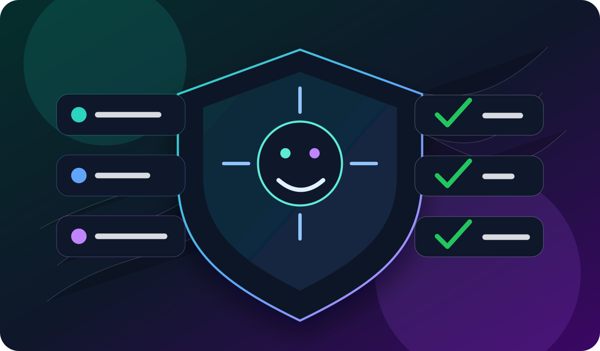

Agent IA, RGPD et AI Act : checklist PME 2026
Les recherches "agent IA RGPD" et "agent IA AI Act" attirent des dirigeants qui veulent automatiser sans prendre de risque inutile. C'est un mot-cle de confiance: il faut repondre clairement, pas vendre du reve.

Pourquoi ce sujet devient central
Les PME veulent des agents IA pour le support, les ventes, les RH, le juridique ou la sante. Mais plus l'agent accede a des donnees sensibles, plus le cadrage devient important. Une page comme agent IA PME doit donc renvoyer vers une ressource claire sur le RGPD et l'AI Act.
L'objectif n'est pas de bloquer les projets. L'objectif est de choisir un perimetre mesurable, avec des donnees minimales et une validation humaine quand l'impact est important.
Checklist RGPD avant lancement
- Identifier les donnees personnelles que l'agent peut lire ou recevoir.
- Supprimer les champs non necessaires au cas d'usage.
- Informer l'utilisateur lorsqu'il interagit avec un agent IA.
- Definir une duree de conservation des conversations et resumes.
- Limiter les droits d'acces par role.
- Prevoir une reprise humaine simple.
- Journaliser les actions importantes de l'agent.
AI Act : penser par niveau de risque
L'AI Act pousse les entreprises a classer les usages selon leur impact. Un agent IA de FAQ n'a pas le meme niveau de risque qu'un agent connecte a un processus RH, juridique ou medical.
Pour les sujets sensibles, reliez le contenu aux pages metier concernees: agent IA RH, agent IA juridique et agent IA sante. Ce maillage donne du contexte aux moteurs et aide aussi le lecteur a trouver le bon perimetre.
Cas sensibles a encadrer
RH et recrutement
Un agent IA RH peut aider a trier des demandes administratives ou preparer des reponses internes. Il ne doit pas prendre seul une decision qui affecte une personne.
Juridique
Un agent juridique peut resumer, classer et preparer une premiere analyse. Les arbitrages doivent rester valides par un professionnel competent.
Sante
Un agent sante doit rester sur l'administratif, l'orientation et les rappels pratiques. Il ne doit pas poser de diagnostic.
Architecture simple pour une PME
Le meilleur modele consiste a separer les roles: une base documentaire autorisee, des outils limites, un journal d'action et une regle d'escalade. Pour une approche locale, la page agence IA Suisse peut servir de hub vers les usages genevois, lausannois et romands.
- Base documentaire controlee: pas d'acces libre a tous les fichiers.
- Connecteurs limites: CRM, ticketing ou calendrier selon le besoin reel.
- Mode brouillon pour les actions sensibles: l'agent prepare, l'humain valide.
- Alertes en cas de demande hors perimetre.
- Revue reguliere des conversations echouees.
Comment transformer ce sujet en trafic SEO
Le bon cluster SEO doit relier trois niveaux: la page generale, les pages metier et les articles de confiance. Par exemple: comparatif agent IA 2026 pour choisir la categorie, agent IA PME pour le cadrage business, puis cet article pour la conformite.
Les ancres doivent rester naturelles: agent IA RGPD, agent IA AI Act, agent IA conforme, agent IA RH, agent IA juridique, agent IA sante. Cela construit une autorite thematique plus solide qu'un article isole.
FAQ
Faut-il une analyse d'impact pour chaque agent IA ?
Pas forcement pour chaque usage simple. Elle devient importante lorsque l'agent traite des donnees sensibles, influence une decision importante ou manipule un volume eleve de donnees personnelles.
Peut-on utiliser un agent IA avec un CRM ?
Oui, mais seulement avec les droits strictement necessaires. L'agent doit acceder aux donnees utiles au cas d'usage, pas a toute l'histoire client.
Quelle est l'erreur la plus courante ?
L'erreur la plus courante est de connecter trop de donnees trop vite. Il vaut mieux commencer petit, mesurer, puis etendre le perimetre.
Conclusion
Un agent IA conforme n'est pas un agent bloque. C'est un agent bien cadre: donnees minimales, role clair, supervision humaine et traces exploitables. C'est aussi le type de contenu que Google peut comprendre comme un signal d'expertise.
Lire le guide agent IA PME ou voir les solutions IA en Suisse.